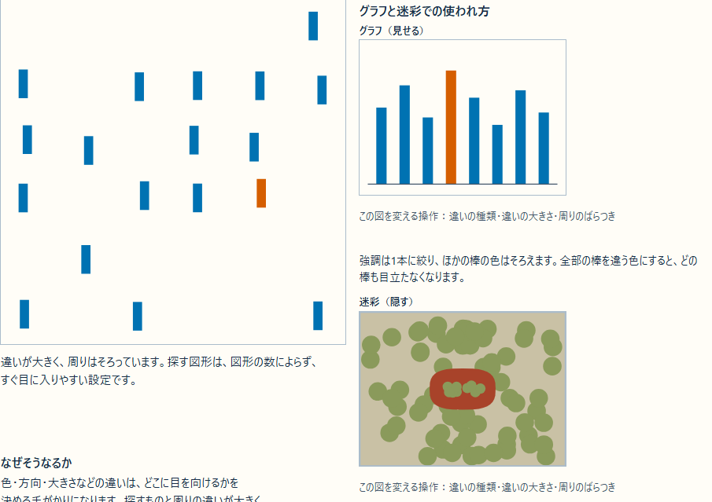

ブラウザーでできる、3つの小さな実験Three small experiments in your browser
見えている文字は、 見たままとは限らないThere is more to text than meets the eye
見えない文字を見つける。文字を加工する。目立ち方を変える。気になったものから、自分の手で確かめられます。Find invisible characters. Distort a word. Change what stands out. Pick an experiment and see what happens for yourself.
3本とも無料・登録不要。ツールは新しいタブで開きます。All three are free and require no account. Tools open in a new tab. Screenshots and the video show the Japanese interface.
約30秒の操作動画（音声なし）。見えない文字の位置とコードを表示します。A silent demonstration, about 30 seconds. Reveal the position and code of an invisible character.
ツールを開き、「エスケープ表記を解釈する」を有効にする。Open the tool and enable the “Interpret escapes” option.
入力欄にhello\u{200B}を貼り付け、「解釈した結果を入力欄へ戻す」を押す。Paste hello\u{200B} into the input box, then choose “Return decoded text to the input.”
検査結果の「中身」でZWSPを選び、末尾のゼロ幅スペース（U+200B）を確認する。Select ZWSP in the character view to inspect the trailing zero-width space (U+200B).
見た目はhelloでも、ゼロ幅スペースを含めて6文字あります。「別の文字列と比較」を開き、比較欄に普通のhelloを入れて「AとBを比較」を押すと、完全一致は「不一致」になります。目で見分けにくい違いも、文字コードで確かめられます。It looks like hello, but contains six characters including the zero-width space. Expand the comparison section, enter plain hello in the comparison box, then press the button to compare A and B. The exact match reports a mismatch. Character codes reveal a difference that is hard to see.
確かめる：見えない1文字を除くと、比較結果はどう変わる？Check your understanding: what changes if you remove the invisible character?
入力欄も比較欄も普通のhelloにして、もう一度「AとBを比較」を押すと、完全一致になります。末尾のU+200Bがなくなり、文字コードの並びが同じになるためです。With plain hello in both boxes, press the button to compare A and B again. The text now matches exactly. Removing the trailing U+200B makes the character-code sequences identical.
どこまで崩すと、読みにくい？How much distortion makes a word hard to read?
CAPTCHA Art Generator
同じ文字列を使い、加工の違いを見比べます。Keep the text the same and compare different processing styles.
ツールを開き、テキストをHELLO42、Seedを12345にする。Open the tool, set the text to HELLO42 and the Seed to 12345.
Minimalを選んで生成し、「現在の画像を比較元にする」を押す。Choose Minimal, generate the image, then save it as the comparison baseline.
Chaoticに切り替えて生成し、線や文字の変化を見比べる。Switch to Chaotic, generate again, and compare the lines and letter shapes.
プリセットで文字の形や背景の線などをまとめて変え、読み取りやすさを見比べます。人やOCRの読み取り成功率、認証としての強さは測定しません。Presets change letter shapes, background lines and other settings together, so you can compare how readable they look. This does not measure human or OCR reading success, or the security of an authentication system.
確かめる：2つのプリセットの比較で、読みにくさの原因を1つに絞れる？Check your understanding: do two presets reveal a single cause of harder-to-read text?
複数の設定が一度に変わるため、原因を1つには絞れません。描画方式2で文字列とSeedを固定し、設定を1つずつ変えると、その変化を比べられます。No. A preset changes several settings at once. In rendering mode 2, keep the text and Seed fixed, then change one setting at a time to compare its effect.
すぐ目に入るもの、探しても見つからないものWhat stands out, and what gets lost?
Vision Trap Atlas

文字から図形へ。周りとの違いが、目立ち方を変えます。From text to shapes: differences from the surroundings change what stands out.
冒頭の「『目立つ』タブ『違いの種類と大きさ』」を押す。Use the opening link to the “Pop-out” tab’s feature-difference controls.
違いの種類を「色」、大きさを「大」、周りのばらつきを「そろっている」にする。Choose Color, a large difference, and uniform surroundings.
大きさを「小」、ばらつきを「ばらばら」に変え、目標の見つけやすさを比べる。Change to a small difference and varied surroundings, then compare how easy the target is to find.
周りとの違いは、グラフで目立たせるときにも、迷彩で隠すときにも関係します。色の違いがわかりにくい場合は、種類を「方向」や「大きさ」に変えて確かめられます。Differences from the surroundings matter both when highlighting a chart and when hiding something with camouflage. If color differences are hard to distinguish, try Orientation or Size instead.
確かめる：違いの大きさが同じでも、見つけやすさは変わる？Check your understanding: can a target become harder to find with the same feature difference?
周りのばらつきによって、見つけやすさが変わることがあります。違いの種類と大きさを固定し、ばらつきだけを切り替えて比べられます。It can, because the variation in the surroundings also matters. Keep the feature type and difference size fixed, then change only the variation to compare.
目立ち方を確かめたら、CamoForgeで迷彩パターンを作ってみましょう。用意した環境画像に重ねて、色や模様の見え方を比べられます。After exploring what stands out, try making camouflage patterns with CamoForge. Overlay them on an environment image you provide to compare how the colors and shapes look.
進捗の記録は使っているブラウザーに残ります。3本をまとめて見返したり、ほかのツールをジャンルや難度から探したりできます。Progress records stay in this browser. Revisit the three tools together, or find other tools by topic or difficulty.